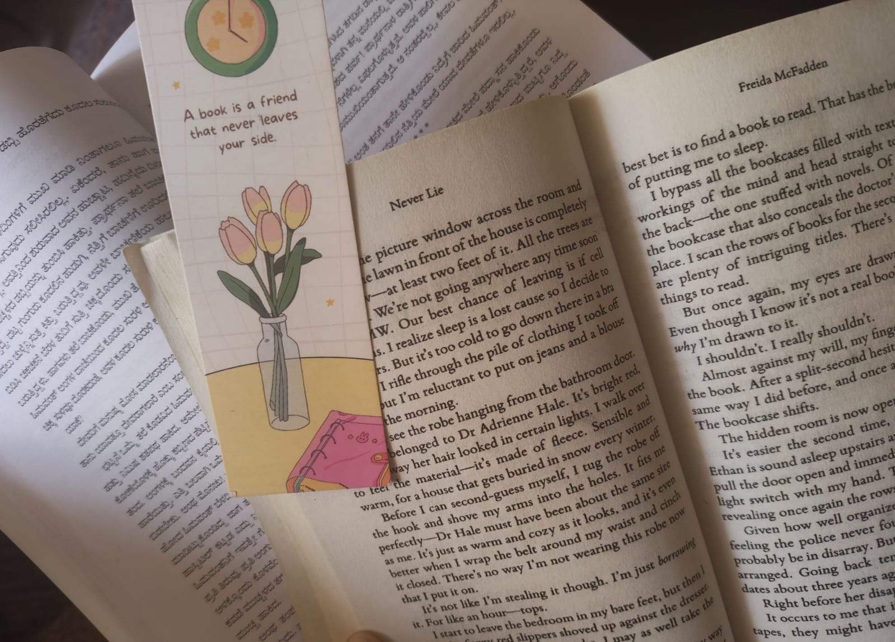
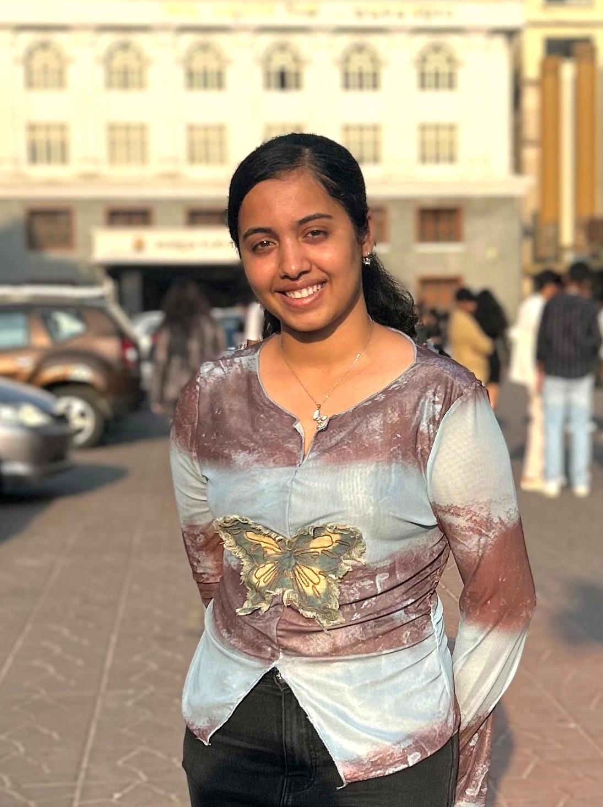
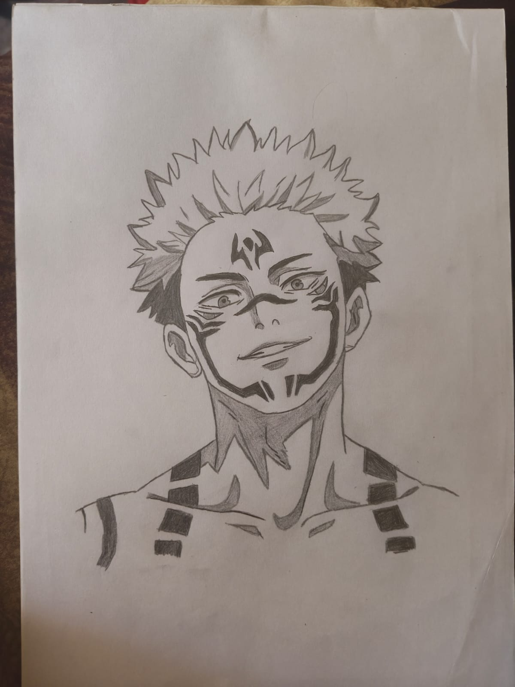
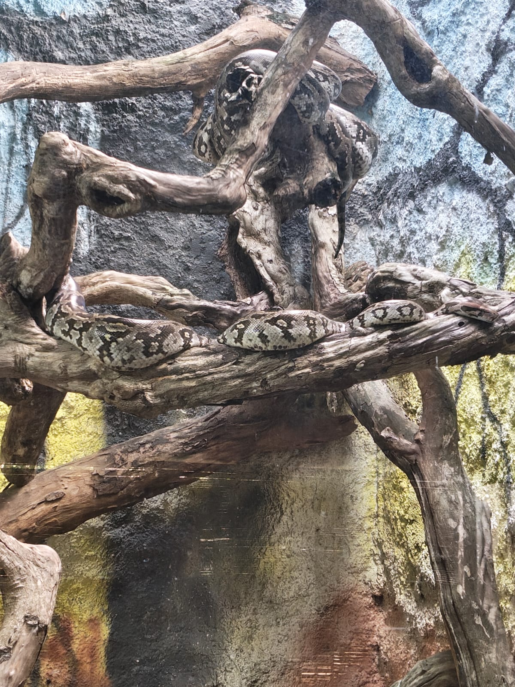
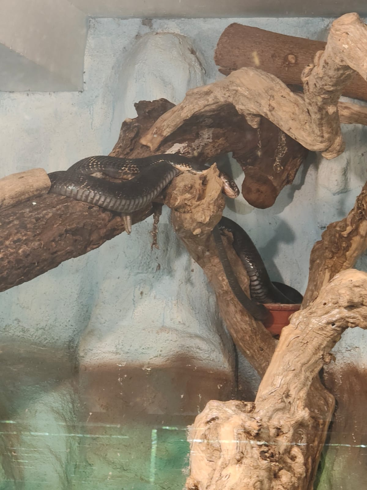
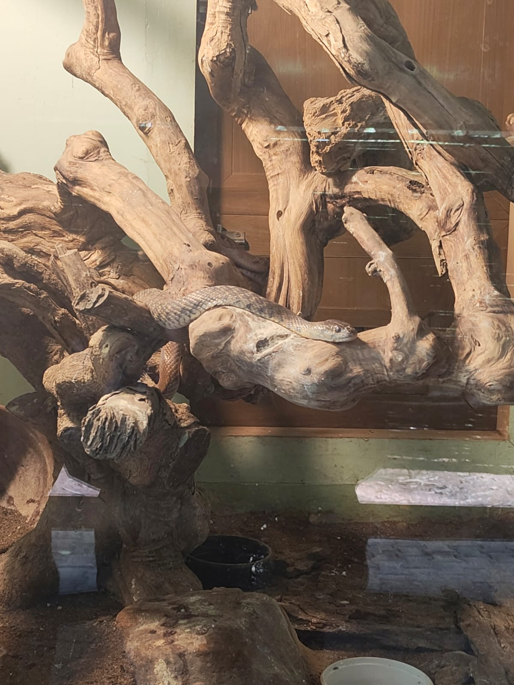

Reading novels
Getting lost in a good story, meeting memorable characters, and taking a little break from the real world.

THE PERSON BEHIND THE STORY
A PERSONAL JOURNEY · 2026—∞
Every step brought me here.
Still figuring things out, building cool things, and collecting little moments along the way.
CHAPTER 01 · THE BEGINNING
A little about me, the things I enjoy, and where I began.
FRAME 002 · THE PLOT↗Education, skills, and lessons along the way.
FRAME 003 · THE MAKING✧Ideas that escaped my notebook.
FRAME 004 · REAL-WORLD WORK✧My Amazon India experience in cloud support engineering.
FRAME 005 · THE NEXT CHAPTER∞A new chapter, still being written.
Every step has taught me something different, and I’m excited to keep learning, trying new things, and finding better ways to turn ideas into something useful.
CHAPTER 01 · THE BEGINNING · MY ROOTS
I'm Akanksha, a CSE student who enjoys understanding how things work, turning ideas into real projects, and making time for stories, music, and a little friendly competition away from the screen.
AWS Club Event Head
Helping bring tech sessions, community, and learning opportunities to campus.
Still curious, still learning, and happy to be figuring things out as I go.
One step, one story, one lesson at a time.
A FEW THINGS I LOVE

Getting lost in a good story, meeting memorable characters, and taking a little break from the real world.
Music on, worries down. Dancing is one of my favourite ways to reset and express myself.
Quick rallies, quick reflexes, and the fun of trying to return one more shot.

A quiet space to slow down, notice details, and turn what I see into something on paper.



I’m fascinated by snakes, their patterns, and the way they move through their environment.
Planning campus tech events, coordinating people, and helping create opportunities for students to learn and connect.
Stories, sketches, wildlife, music, and rallies. That’s me outside the screen.
CHAPTER 02 · THE CLIMB
From my first classroom milestones to my first experience in industry, each step has taught me something new.
Vijaya School
Score: 99.36%
Brilliant PU College, Hassan
Score: 98%
Bangalore Institute of Technology, Bengaluru
Current CGPA: 9.38
Support Engineering · AWS
Built an AWS Storage Management Dashboard exploring S3, EBS, EFS and RDS monitoring.
EXPLORE INTERNSHIP ↗ STEP 05 · WHAT COMES NEXT THE NEXT CHAPTERA new opportunity to learn, contribute, and grow.
LOOK AHEAD ↗SKILLS I’M GROWING
THE CLIMB · PUTTING LEARNING INTO PRACTICE
Every new concept, challenge, and experience is an opportunity to understand the world a little better.
Through software, cloud technologies, and AI, I explore how thoughtful engineering can turn problems into possibilities.
I want the things I build to be useful, reliable, and meaningful to the people who depend on them.
My goal is to keep growing as an engineer, a collaborator, and a person who approaches every opportunity with purpose.
CHAPTER 04 · PROJECTS, EXPERIMENTS & WHAT I LEARNED
Every project is a frame capturing a problem I explored, a skill I developed, and something new I learned.
SOCIAL IMPACT
A mobile-first safety concept built around fast help, location, and discreet support.
EXPLORE PROJECT ↗SMART COMMUNITIES
Turning neighbourhood waste reports into something easier to track and act on.
EXPLORE PROJECT ↗ARTIFICIAL INTELLIGENCE
Computer vision, gaze signals, and sequence modelling in a team-built system.
EXPLORE PROJECT ↗DIRECTOR'S NOTES · BETWEEN THE FRAMES
Not just what I built, but what stayed with me after the code.
Good technology should start with a real problem and keep the people using it in focus.
Computer vision work taught me to question model outputs, test assumptions, and treat results as evidence to evaluate.
Reliability, clear feedback, and maintainability matter just as much as getting a feature to work once.
A REAL-WORLD CHAPTER · MAY—JULY 2025
During my two-month internship, I worked on an AWS Storage Management Dashboard to bring visibility to storage services including S3, EBS, EFS and RDS. I worked with AWS SDK integrations, CloudWatch, IAM-based access, monitoring, analytics and automated alerts. More than a line on my resume, it was a chance to see how engineering choices connect to reliability, operations and cost.
CHAPTER 05 · THE NEXT FRAME
A NEW CHAPTER AWAITS
GyanSys · the next chapter
I’m looking forward to learning, contributing thoughtfully, and growing with the people I work with. One step at a time, with curiosity and dedication.
My future is not a finished frame. It's a possibility I get to build.
A QUICK LOOK AT THE WORK
B.E. CSE · CGPA 9.38
EXPERIENCEAmazon India · Support Engineering Intern, AWS
PROJECTSStudent Engagement System · WomenRescueRush · GreenScore Bengaluru
SELECT TO VIEW THE COMPLETE PDF ↗THE NEXT CONVERSATION
Bengaluru, India
END OF THIS CHAPTER · NOT THE STORY
And the best is yet to come.
REPLAY MY STORY ↑